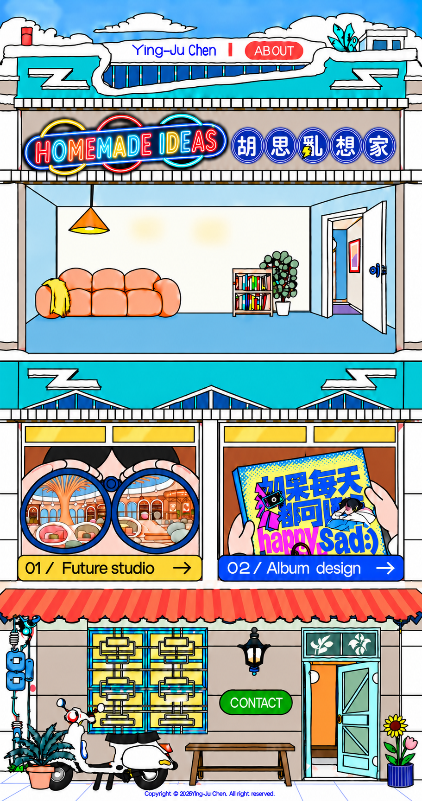

胡思亂想家 — Homemade Ideas, Ying-Ju Chen
ABOUT
click for idea
↺
01 / Future studio
→
02 / Album design
→
CONTACT
×
Project window. Press Escape or Close to return. Drag the title bar on desktop.
HOMEMADE IDEAS
✦